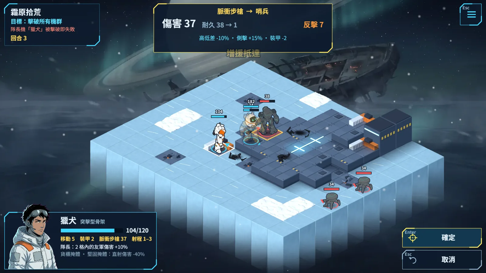
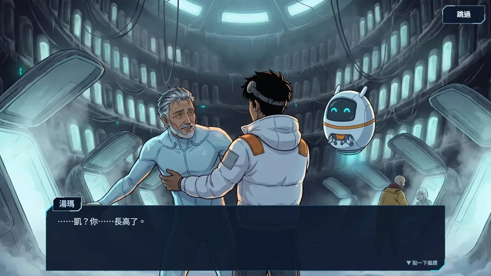
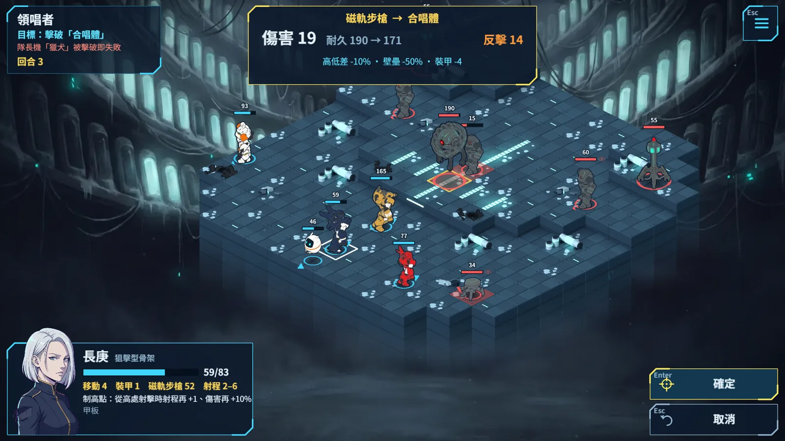
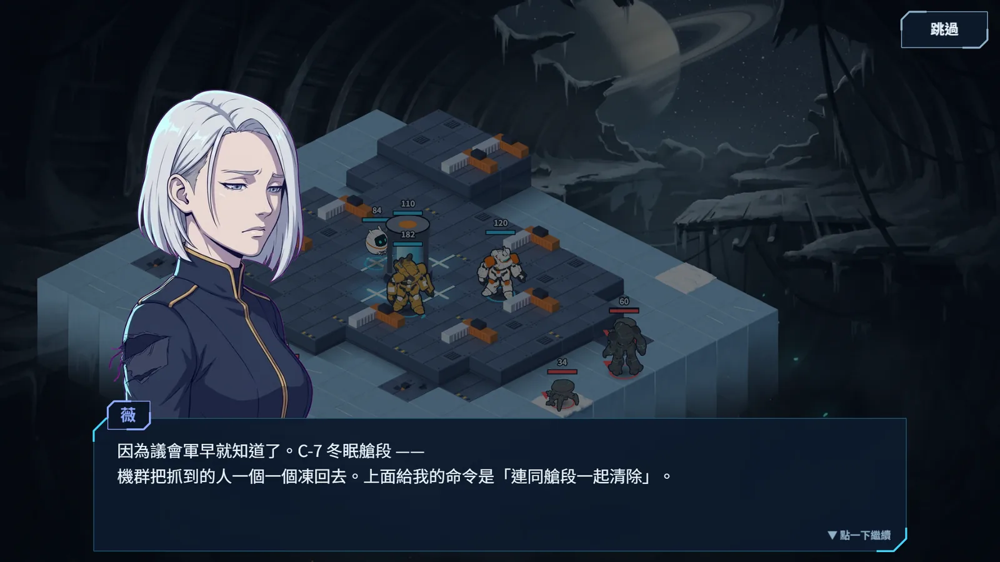
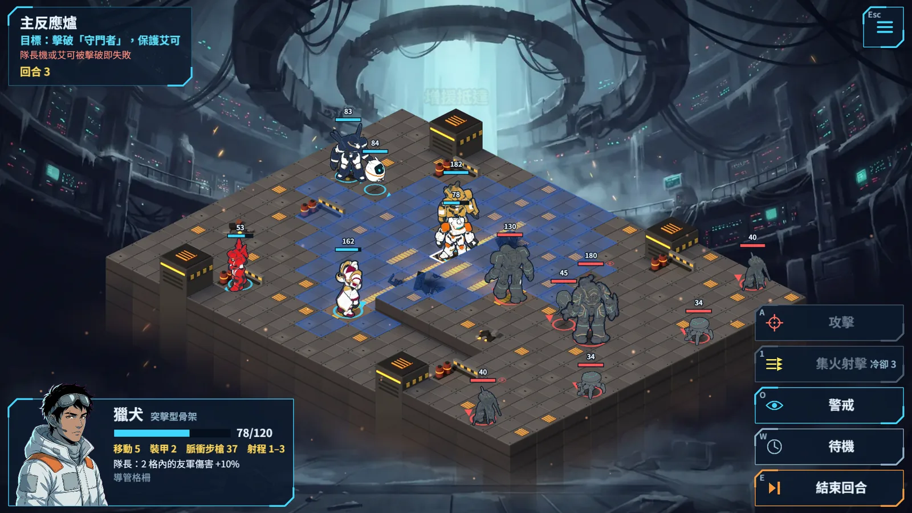
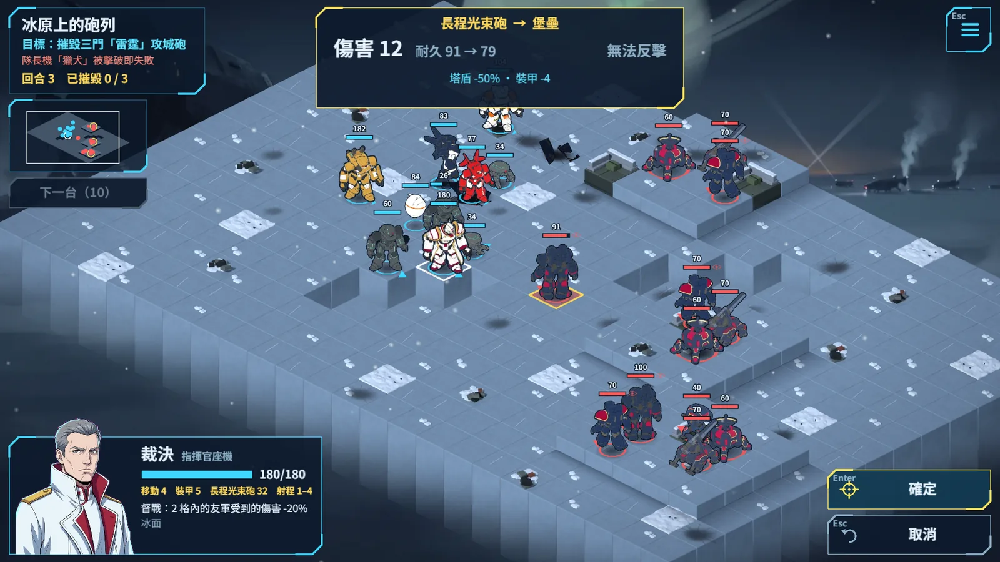
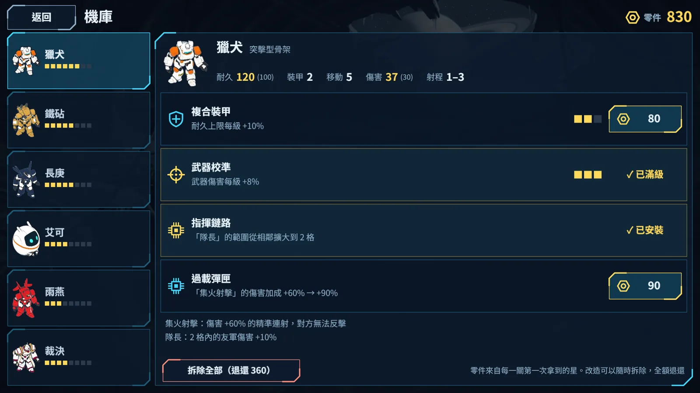
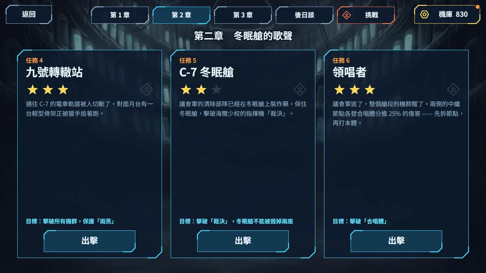

這是公開測試版
遊戲已經可以從頭玩到結局。目前只在電腦的瀏覽器上完整測過，手機和平板上跑得怎麼樣，要靠你回報，尤其是 Android 手機。
The game is complete from start to ending. So far it has only been fully tested in desktop browsers, so reports from phones and tablets, Android phones above all, are the most useful ones.
FEATURES遊戲特色
看得見結果的回合制戰術
傷害是固定的，出手之前就看得到會打掉多少、對方會不會反擊。高低差、側面和背後、掩體，都算得出來。
Turn-based tactics with fixed damage: you see the result before you commit. Height, flanking and cover all count.
6 台機體，各有打法
突擊、重裝、狙擊、修復、斥候、指揮。每一台有自己的技能，可以在機庫用過關拿到的零件改造。
Six frames with their own skills, upgraded in the hangar with parts earned from missions.
12 個任務的完整故事
主線三章加後日談，有結局。角色立繪會換表情，重要的場面有全螢幕插圖，各章有自己的配樂。
Twelve missions across three chapters and an epilogue, with portraits, illustrations and a soundtrack for each chapter.
打完還有
每一關都能用加強的敵人再挑戰一次；機體與敵人的圖鑑 27 則、成就 23 個。難度有一般和輕鬆兩種。
A challenge mode for every mission, a codex of 27 entries and 23 achievements. Two difficulty settings.
為手機做的操作
觸控直接點；電腦可以用滑鼠、鍵盤或手把。文字大小和色盲配色可以調，中文、英文隨時切換。
Built for touch, with mouse, keyboard and gamepad support. Text size, colour-blind palette, Chinese and English.
存檔跟著你
三個存檔欄位，戰鬥中離開可以接著打。想跨裝置的話可以用 Google 帳號登入同步；不登入也能玩，存檔只留在裝置上。
Three save slots and mid-battle resume. Optional Google sign-in syncs saves across devices; without it, saves stay on the device.
SCREENSHOTS遊戲畫面








INSTALL裝到主畫面
不裝也能玩。裝到主畫面之後會像 App 一樣全螢幕、橫向開啟。
iPhone、iPad
- 用 Safari 開遊戲。
- 按「分享」。
- 選「加入主畫面」。
Open the game in Safari, tap Share, then Add to Home Screen.
Android
- 用 Chrome 開遊戲。
- 標題畫面有「安裝」就按它。
- 沒有的話，按右上角的選單，選「安裝應用程式」或「加到主畫面」。
Open the game in Chrome and tap Install on the title screen, or use the browser menu: Install app / Add to Home screen.
電腦
- 用 Chrome 或 Edge 開遊戲。
- 按標題畫面的「安裝」，或網址列右邊的安裝圖示。
In Chrome or Edge, use Install on the title screen or the install icon in the address bar.
第一次開的時候，遊戲會在背景把自己存進裝置（約 35 MB），標題畫面右下角看得到進度。存完之後沒有網路也能玩。
On the first visit the game saves itself to the device in the background (about 35 MB; progress shows at the bottom right of the title screen). After that it plays without a network.
FEEDBACK回報問題
從遊戲裡回報（建議）
「設定」左下角的「回報問題」會列出版本、裝置和最近的錯誤。按「打開回報表單」，這些資訊會自動帶進表單，你只要補上當時的經過。
In the game: Settings, then Report a problem at the bottom left. It opens the form with the version, device and recent errors already filled in.
直接填表單
星墜殘響 問題回報。不用登入，也不會收集你的電子郵件。請寫上手機或平板的型號。
Or open the report form directly. No sign-in, no email collected. Please name your phone or tablet model.
最想知道的事
- 哪裡卡住、當掉或畫面跑掉。
- 按不到或看不清楚的地方。
- 跑得順不順，用的是什麼裝置。
- 哪一關太難、太簡單，或看不懂要做什麼。
Crashes and layout problems, things that are hard to tap or read, how it runs on your device, and missions that feel too hard, too easy or unclear.